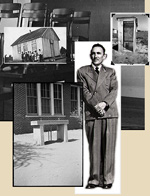

|

|
George Isidore Sánchez
(1906-1972), internationally renowned civil rights leader and educator, was chairman, 1951-59, of the
Department of History and Philosophy of Education of The University of Texas at Austin, as well as director of
the Center for International Affairs, and a member of the Executive Committee of the Institute of Latin
American Studies.
The George I. Sánchez Papers, housed in the Benson Latin American Collection of The University of Texas at
Austin, include 465 photographs made available here in digital form thanks to support from the University of
Texas System Academic Library Collection Enhancement Program.
The photographs consist of three groups:
- Schools in thirteen Texas school districts (1946?)
- Photographs documenting conditions in schools for Mexican-American children as part of "A Study of the Educational Opportunities Provided Spanish-Name Children in Ten Texas School
Systems" (1948). This study preceded a successful District Court decision, Delgado v. Bastrop ISD, that
led to desegregation of Texas schools for Mexican-American children. Pictured below are Mathis High School in
Mathis, Texas and "Mexican Ward Schools" also in Mathis.
- Schools in San Miguel and Río Arriba Counties, New Mexico (1934?)
- Photographs taken during Dr. Sánchez' tenure, 1931-35, as director of New Mexico State Department of
Education Division of Information and Statistics. Below is Ojo del Medio, San Miguel County, New Mexico; photo
taken 1934-35.
- Migrant labor camps in Texas (date unknown)
- Photographs, with accompanying annotations, documenting conditions in migrant labor camps. Pictured below
is the exterior of a typical one room shack where a family of four lived and the interior of a labor camp
dwelling.
|


{kind=link}
{kind=link}
{kind=link}
{kind=link}
{kind=link}